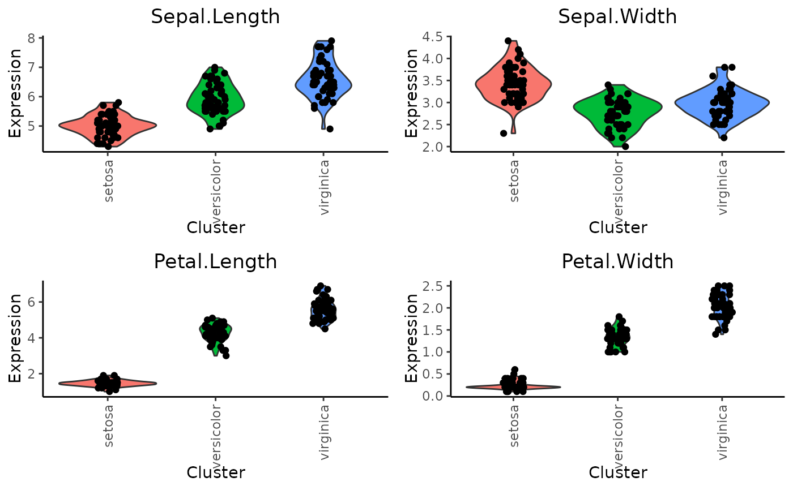

The VlnPlot function enables visualizing expression levels
of feature(s), across clusters using violin plots.
Usage
VlnPlot.SingleCellExperiment(
object,
clustering.label,
features,
return.plot,
rotate.x.axis.labels
)
# S4 method for class 'SingleCellExperiment'
VlnPlot(
object,
clustering.label,
features,
return.plot = FALSE,
rotate.x.axis.labels = FALSE
)Arguments
- object
of
SingleCellExperimentclass- clustering.label
A variable name (of class
character) available in the cell metadatacolData(object)with the clustering labels (characterorfactor) to use.- features
Feature names to plot by cluster (
character) matchingrow.names(object).- return.plot
return.plot whether to return the
ggplot2object. Default isFALSE.- rotate.x.axis.labels
a logical denoting whether the x-axis labels should be rotated 90 degrees or just draw it. Default is
FALSE.
Examples
# Import package
suppressPackageStartupMessages(library("SingleCellExperiment"))
# Create toy SCE data
batches <- c("b1", "b2")
set.seed(239)
batch <- sample(x = batches, size = nrow(iris), replace = TRUE)
sce <- SingleCellExperiment(assays = list(logcounts = t(iris[,1:4])),
colData = DataFrame("Species" = iris$Species,
"Batch" = batch))
colnames(sce) <- paste0("samp", 1:ncol(sce))
# Plot features by clustering/grouping variable
VlnPlot(sce, clustering.label = "Species",
features = row.names(sce)[1:4],
rotate.x.axis.labels = TRUE)
